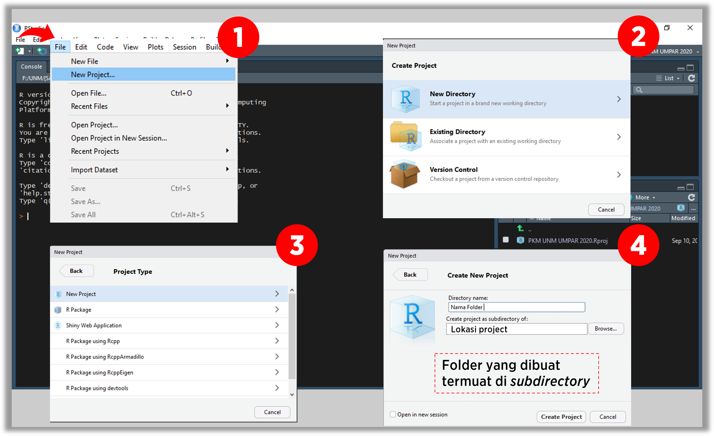
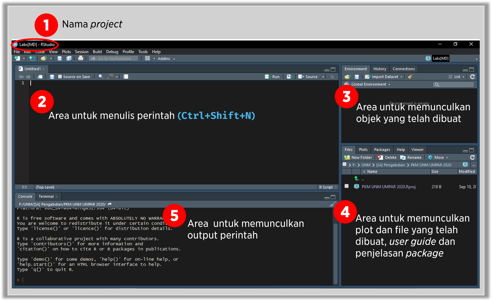

Sebelum memulai menggunakan R sebaiknya kita membuat project sehingga semua file yang digunakan berada dalam sebuah directory. Tindakan ini dapat membuat pekerjaan menjadi lebih mudah tanpa harus memperhatikan lokasi file yang akan digunakan, baik file .R maupun file data set.
Adapun langkah-langkah pembuatan project setelah membuka R Studio adalah sebagai berikut:
Memilih menu file kemudian memilih New Project.
Memilih pilihan New Directory untuk untuk membuat project baru bukan yang sudah ada sebelumnya.
Memilih New Project.
Menuliskan nama project, misal [MD] Labs, kemudian memilih lokasi penyimpanan project dengan menekan pilihan Browse, terakhir menekan pilihan Create Project.

Figure 1.1: Langkah pembuatan project
Setelah membuat project sebagaimana diilustrasikan pada Gambar fig-project, maka R Studio menampilkan lembar kerja seperti pada Gambar fig-project-3.

Figure 1.2: Tampilan project yang dibuat
1.2 Penyesuaian kelas objek
Pengelolaan data terlebih dahulu dimulai dengan menyesuaikan kelas objek dengan kasusnya. Misal:
untuk informasi harga satuan barang maka kelasnya bisa berupa numeric atau integer;
untuk informasi brand barang maka kelasnya bisa berupa character atau factor.
untuk informasi tanggal pembelian maka kelasnya bisa berupa POSIXct.
Ilustrasi
Rekapitulasi data pembelian barang di sebuah toko online pada tahun 2019 disimpan dalam file pembelian.csv. Untuk mengelola informasi pembelian tersebut maka terlebih dahulu memeriksa kelas objek dengan menampilkan struktur data.
Berdasarkan struktur dari raw_data diketahui bahwa kelas objek dari order_date perlu diubah menjadi POSIXct. Selain itu, kelas objek brand diubah menjadi factor dan item price diubah menjadi numeric. Berikut perintah yang bisa digunakan.